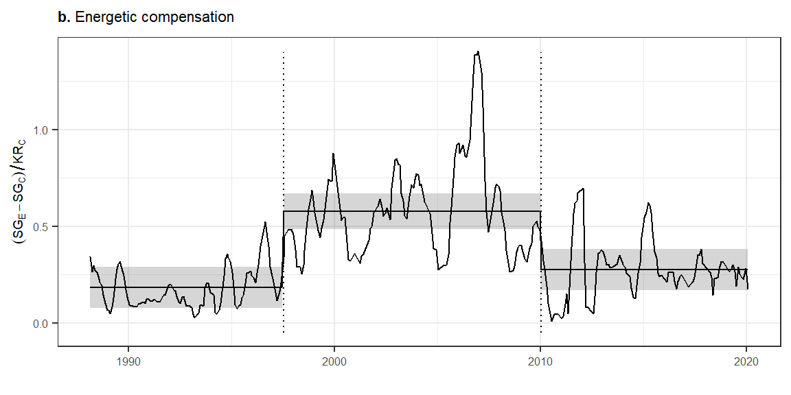

comp_mean_gls <- gls(smgran_comp ~ oera, correlation = corCAR1(form = ~ period), data = compensation)
comp_mean_gls_emmeans <- emmeans(comp_mean_gls, specs = ~ oera)
comp_mean_pred <- as.data.frame(comp_mean_gls_emmeans) %>%
mutate(oera = ordered(oera)) %>%
right_join(compensation)Joining with `by = join_by(oera)`comp_title <- expression(paste(bold("b."), " Energetic compensation"))
comp_plot <- ggplot(filter(comp_mean_pred, oplottype %in% c("CC", "EE")), aes(censusdate, emmean)) +
geom_line() +
geom_ribbon(aes(ymin = lower.CL, ymax = upper.CL), alpha = .2) +
geom_line(aes(y = smgran_comp_ma)) +
ggtitle(comp_title) +
ylab(bquote((SG[E] - SG[C]) / KR[C])) +
geom_segment(data = era_df, aes(x = event_date, xend = event_date, y = -.05, yend = 1.4), linetype = 3)+
xlab("") +
theme(title = element_text(size = 7),
axis.title.y = element_text(size = 7),
axis.text = element_text(size = 6)) +
xlab("")
comp_plot